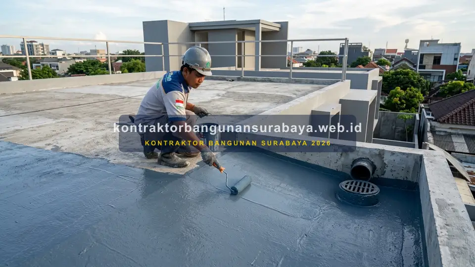

1. Bagaimana Cara Merenovasi Atap dan Plafon Rumah agar Bebas Bocor dan Rembes?
Bagaimana cara merenovasi atap dan plafon rumah agar bebas bocor dan rembes?
Merenovasi atap dan plafon rumah agar bebas bocor dan rembes melibatkan pemeriksaan kondisi rangka atap, penggantian penutup atap yang sudah retak atau bergeser, serta penerapan lapisan waterproofing pada dak beton sebelum plafon baru dipasang. kontraktorbangunansurabaya.web.id membantu pemilik rumah di Surabaya menangani masalah kebocoran atap secara menyeluruh, bukan hanya menutupi gejalanya sementara.
Kebocoran atap dan plafon yang dibiarkan berlarut-larut tidak hanya merusak keindahan interior rumah, tetapi juga berisiko melemahkan struktur penopang plafon, merusak instalasi kabel kelistrikan di atas plafon, serta memicu pertumbuhan jamur yang mengganggu kesehatan pernapasan penghuni rumah.
Prinsip Utama Renovasi Atap Efektif
Pendekatan teknis renovasi mengutamakan identifikasi titik sumber air secara presisi sebelum melakukan perbaikan estetika plafon melalui layanan terpadu jasa renovasi bangunan rumah profesional di Surabaya.
2. Memeriksa Kondisi Rangka dan Penutup Atap Sebelum Renovasi
Pemeriksaan kondisi rangka atap, baik kayu maupun baja ringan, perlu dilakukan sebelum memutuskan sekadar mengganti penutup atap, karena rangka yang sudah lapuk atau berkarat tetap akan menimbulkan masalah meski penutup atapnya sudah diganti baru.
Genteng yang bergeser, retak, atau pecah pada bagian tertentu sering menjadi sumber kebocoran yang sebenarnya mudah diperbaiki tanpa harus mengganti seluruh atap, sehingga pemeriksaan menyeluruh sebaiknya dilakukan terlebih dahulu untuk menentukan skala perbaikan yang benar-benar dibutuhkan.
| Elemen Atap | Titik Kerusakan Kritis | Tindakan Renovasi yang Direkomendasikan |
|---|---|---|
| Rangka Atap (Kuda-kuda & Reng) | Kayu lapuk akibat rayap/air, baja ringan kendur atau berkarat | Penggantian batang struktur yang keropos dengan baja ringan Zincalume berstandar SNI |
| Penutup Atap (Genteng/Spandek) | Genteng melorot, retak rambut, sekrup spandek longgar tanpa karet seal | Reposisi susunan genteng, penggantian keping genteng pecah, dan peremajaan dynabolt/roofing screw |
| Nok (Wuwungan / Karpusan) | Adukan semen plesteran retak atau hancur dimakan cuaca | Plester ulang dengan campuran semen elastis anti-rembes dan penambahan flash band waterproof |
| Talang Jurai & Seng Talang | Sambungan talang bocor, talang seng berkarat, tumpukan sampah daun | Penggantian talang PVC tebal atau stainless steel dengan kemiringan buangan air yang cukup |
Pemeriksaan pada bagian talang dan nok atap juga sering terlewat, padahal kedua area ini termasuk titik yang rawan mengalami kebocoran akibat sambungan yang kurang rapat atau material yang sudah aus dimakan usia.
Untuk mengetahui lebih dalam karakteristik ketahanan masing-masing material penutup atap hunian, Anda dapat membaca ulasan mengenai perbandingan atap genteng beton, metal, dan spandek sebagai referensi pemilihan penutup atap pengganti.
3. Penerapan Waterproofing pada Dak Beton Sebelum Plafon Dipasang
Untuk rumah dengan atap dak beton, lapisan waterproofing yang sudah rusak atau melewati usia pakainya perlu diperbarui sebelum plafon baru dipasang, karena memasang plafon di atas lapisan waterproofing yang bermasalah hanya akan menutupi gejala tanpa menyelesaikan akar masalah kebocoran.

Perbaikan retak pada permukaan dak beton juga perlu dilakukan sebelum aplikasi waterproofing baru, karena retak yang dibiarkan akan tetap menjadi jalur rembesan air meski sudah dilapisi material anti air di atasnya.
Tahapan Perbaikan Dak Beton
- Pembersihan Total: Mengikis lumut, debu, dan sisa lapisan waterproofing lama yang telah terkelupas.
- Injeksi / Grouting Retakan: Mengisi celah retak rambut dengan semen grouting non-shrink atau sealant polyurethane.
- Primer Bonding: Melapisi cairan primer agar lapisan waterproofing menempel sempurna ke beton.
- Aplikasi Serat Fiber: Menanam mesh fiberglass pada sudut pertemuan dak dan dinding pembatas.
Pengecekan Aliran Pembuangan Air
- Evaluasi Kemiringan (Screeding): Memastikan sudut kemiringan minimal 1-2% mengarah langsung ke floor drain.
- Pencegahan Genangan (Ponding): Mengeliminasi cekungan air yang memicu pelapukan cepat membran anti-air.
- Roof Drain Screen: Memasang saringan kubah (dome drain) agar saluran pipa tidak tersumbat kotoran.
- Uji Rendam (Flood Test): Mengetes genangan air selama 24 jam sebelum proses pemasangan plafon bawah dimulai.
Kemiringan dak beton menuju saluran pembuangan juga perlu diperiksa, karena kemiringan yang kurang tepat dapat menyebabkan air menggenang di beberapa titik, yang pada akhirnya mempercepat kerusakan lapisan waterproofing di area genangan tersebut.
Pemeriksaan berkala pada area basah dan dak atap ini juga sejalan dengan panduan tips memilih material anti air untuk memproteksi setiap sudut hunian dari rembesan air tak terduga.
4. Penggantian Plafon yang Rusak Akibat Rembesan Bersama kontraktorbangunansurabaya.web.id
Plafon yang sudah menghitam atau melengkung akibat rembesan air dalam waktu lama sebaiknya diganti sepenuhnya, bukan hanya dicat ulang, karena kerusakan pada material plafon seperti gypsum yang sudah menyerap air cenderung sulit kembali ke kondisi semula meski permukaan luarnya terlihat kering.
kontraktorbangunansurabaya.web.id menangani renovasi atap dan plafon secara menyeluruh, mulai dari perbaikan sumber kebocoran hingga penggantian material yang rusak, sehingga hasil akhir renovasi benar-benar menyelesaikan masalah, bukan sekadar mempercantik tampilan sementara waktu.
Keunggulan Layanan Renovasi Atap & Plafon Kami di Surabaya:
- Pemeriksaan Akar Masalah Gratis: Tim ahli sipil menelusuri sumber kebocoran hingga ke struktur kuda-kuda dan dak beton.
- Material Plafon Berkualitas: Pilihan gypsum water resistant (tahan air), rangka hollow galvanis anti-karat, dan plafon PVC premium.
- Pengerjaan Rapi & Cepat: Tukang spesialis berpengalaman dengan proteksi area kerja agar perabotan rumah tetap bersih dan aman.
- Garansi Kebocoran Tertulis: Memberikan jaminan garansi resmi pasca renovasi untuk kenyamanan dan ketenangan keluarga Anda.
Pemilihan jenis plafon pengganti, seperti gypsum tahan air (water resistant) untuk area yang berisiko lembap, juga menjadi pertimbangan penting agar masalah serupa tidak mudah berulang meski sumber kebocoran utama sudah diperbaiki.
Renovasi atap ini merupakan bagian dari perencanaan renovasi rumah secara menyeluruh. Baca kembali panduan mengenai jasa renovasi rumah surabaya untuk memahami tahapan renovasi rumah dan ruko secara lengkap.
Perawatan Berkala Pasca Renovasi
Untuk menjaga keawetan atap dan plafon rumah Anda dari potensi kebocoran di musim hujan, manfaatkan layanan maintenance dan inspeksi bangunan rutin bersama tim profesional kami.
5. FAQ Seputar Renovasi Atap dan Plafon Bebas Bocor
6. Konsultasi Gratis Sekarang
Ingin berdiskusi lebih lanjut mengenai kebutuhan konstruksi bangunan Anda di Surabaya? Hubungi tim kami melalui WhatsApp di 0889-8964-3555 untuk konsultasi awal tanpa biaya bersama kontraktorbangunansurabaya.web.id.
Konsultasi WhatsApp di 0889-8964-3555Reza Maulana Nehru
Praktisi & Penulis Edukasi Konstruksi Bangunan di Kontraktor Bangunan Surabaya. Berfokus pada perbaikan struktur atap, teknik waterproofing bangunan, renovasi hunian bebas kebocoran, estimasi biaya RAB, dan standarisasi pelaksanaan proyek di Surabaya dan sekitarnya.